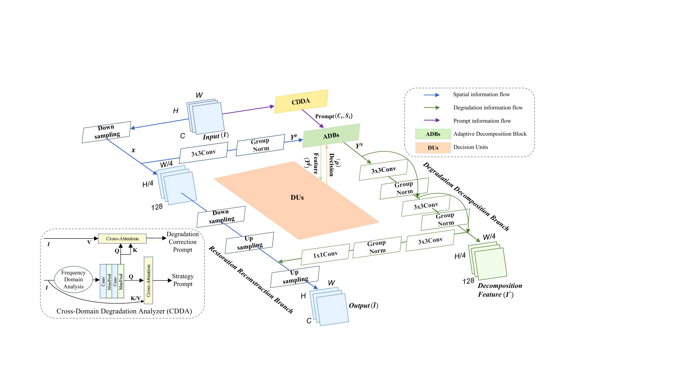

Main result
23.82 dB / 0.8398
Best validation at epoch 34 with 256×256 crop training
Best setting
256×256 crop
Balanced spatial context, augmentation, and optimization stability
Negative result
512 refinement ↓
23.27 dB after low-LR refinement from 256 best
Bottleneck
Hard Dust / Mixed
Severe contamination remains the dominant failure mode
Motivation
- Smartphone lenses are easily contaminated by dust, fingerprint, scratch, water, and mixed residue.
- Dirty lens degradation creates both spatial artifacts and frequency-domain distortion.
- The core question is whether a degradation-adaptive all-in-one model can handle SIDL restoration.
SIDL Dirty Lens Restoration Task
SIDL is a real-world paired dataset for restoring smartphone images captured through contaminated lenses. This project uses 512×512 patchified image pairs and evaluates PSNR/SSIM by contamination type and difficulty.
clean
dust
finger
mixed
scratch
water
| Difficulty | PSNR | SSIM |
|---|
| Easy | 27.00 | 0.8812 |
| Medium | 25.36 | 0.8862 |
| Hard | 20.33 | 0.7743 |
Experimental Setup
- Model
- D3Net, scratch training
- Train data
- SIDL patchified degraded-clean pairs
- Validation
- 512×512 image pairs, PSNR / SSIM
- Main crop
- 256×256 random crop
- Hardware
- RTX 4090
- Limit
- Limited class-project compute budget
D3Net Architecture

Original D3Net architecture figure from Wang et al., arXiv:2502.19068: restoration reconstruction branch + degradation decomposition branch with CDDA prompts.
Dynamic Degradation Decomposition

Original D3Net DDM figure from Wang et al., arXiv:2502.19068. Decision Units decide whether Adaptive Decomposition Blocks should process degradation-aware features.
Main Results
| Run | PSNR | SSIM |
|---|
| 128 baseline | 23.33 | 0.8357 |
| 256 main | 23.82 | 0.8398 |
| 256 low-LR | 23.76 | 0.8409 |
| 512 refinement | 23.27 | 0.8336 |
Patch-size Ablation
12823.33
25623.82
256 polish23.76
51223.27
256 crop improves over 128 by adding spatial context, while 512 refinement drops despite larger context.
All-in-One Model Context
D3Net paper reports a five-task all-in-one benchmark. This is not a direct SIDL comparison, but it motivates using D3Net as a degradation-adaptive baseline.
| Method | Avg. PSNR | Params | FLOPs |
|---|
| AirNet | 25.49 | 8.93M | 75.32G |
| PromptIR | 27.57 | 32.97M | 370.64G |
| IDR | 28.34 | 15.34M | - |
| InstructIR | 29.55 | 15.84M | 37.95G |
| D3Net | 32.36 | 37.80M | 33.67G |
Difficulty & Contamination Analysis
| Type | Average PSNR | Average SSIM |
|---|
| Clean | 29.93 | 0.9113 |
| Dust | 21.89 | 0.8203 |
| Finger | 21.80 | 0.7858 |
| Mixed | 20.48 | 0.8269 |
| Scratch | 25.07 | 0.8488 |
| Water | 22.93 | 0.8423 |
Hard Dust: 16.86 / 0.7065
Hard Mixed: 17.62 / 0.7843
Qualitative Results

Input / D3Net output / GT examples from the 256 best checkpoint.
Takeaways
- D3Net can be adapted to SIDL dirty lens restoration under limited compute.
- 256×256 crop training was the most stable setting.
- 512 refinement suggests patch-size-induced training distribution shift.
- Hard Dust/Mixed remains the main bottleneck.